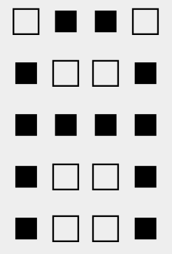

Vamos a utilizar números binarios de 4-bits. Si tomamos una pila de 5 números binarios de 4 bits, podemos hacer patrones e imágenes. Para ayudarlos a visualizar esto, ustedes pueden pensar que los 0's son blanco y los 1's son negro. Por ejemplo, el siguiente patrón de bits se mira así:
0b0110
0b1001
0b1111
0b1001
0b1001

Responder
En un archivo de texto respondan a las siguientes preguntas:
Hagan click aquí para encontrar el juego. El objetivo es hacer coincidir el numero de la derecha con el representación binaria sin signo de la izquierda. Esto requiere una combinación de clicking y typing. Y hay presión de tiempo para hacer las cosas mas divertidas.
El juego progresivamente se va volviendo mas rápido y más difícil. Vean si pueden alcanzar arriba de 20,000 puntos y llegar al nivel 5.
Meta:
Si les entregamos mil billetes de $1 y diez sobres. Su trabajo es encontrar una manera de poner una cantidad X de billetes de dolar en cada uno de los diez sobres, de modo que sin importar la cantidad que uno les pida (entre $1 y $1000), ustedes solo tienen que dar una combinación de esos sobres asegurándose de dar siempre la cantidad correcta en efectivo.
Responder
En un archivo de texto respondan:
Esta es una versión de un juego bien chilero que tiene una solución basada en number representation.
Jueguen en el siguiente link. Primero jueguen un par de veces y vean si pueden ganar algunos rounds.
Después de haberlo intentado muchas veces, échenle un vistazo a este articulo de Wikipedia. Con este
nuevo conocimiento a la mano, ahora ustedes deben de ser capaces de vencer a Juan siempre. Pero
siempre va a tomar un poco de practica. Sigan intentado hasta que puedan ganar seguidamente.
Responder
En un archivo de texto respondan: